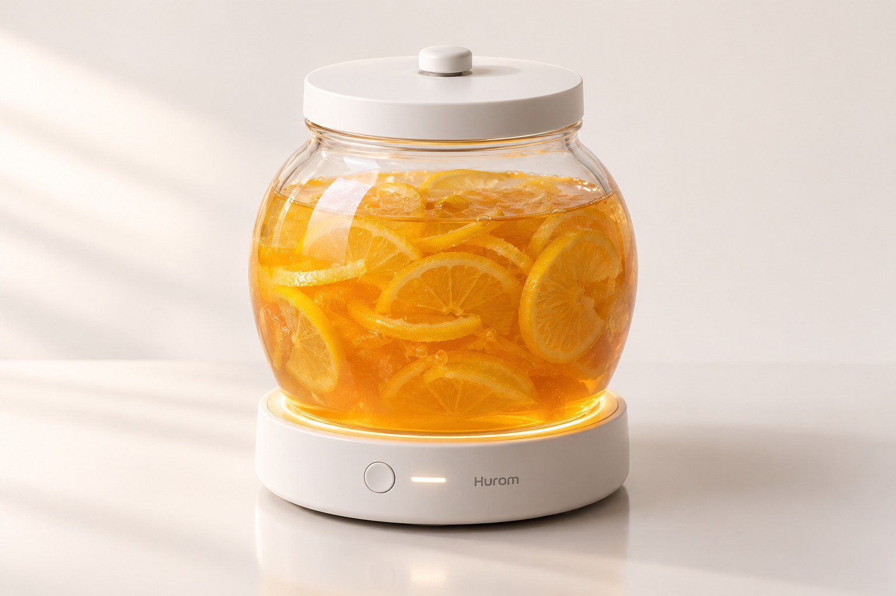

완성 · GPT대표 컷 · 유자청
스튜디오 대표 컷. 유자 슬라이스와 설탕이 든 주황빛 유자청, 빛 링은 따뜻한 주황.
전체 프롬프트 보기
A countertop fruit-syrup maker. A clear borosilicate glass jar shaped like a small Korean onggi pot — rounded belly 16cm wide, narrower mouth 12cm, 16cm tall, 2-liter capacity, smooth thick glass, no holes, no handles, no tap. White matte flat lid with a small round valve knob in the center. The jar sits on a low round base, 19cm diameter and 5cm tall, white matte finish, soft rounded edges. A thin glowing light ring between the jar and the base lights the syrup from below. On the base front: one small round button and one short horizontal light line, plus a tiny grey "Hurom" logo. No wood, no screens, no visible cables. Premium Korean home appliance, minimal. Photorealistic product photography, accurate glass refraction and caustics, soft natural shadows. Scene: Studio hero shot. The jar is filled with yuzu syrup: thin yuzu slices and sugar in golden-orange syrup. The light ring glows warm amber. Clean warm-white seamless background, product centered, slight 3/4 angle from above, soft daylight from the left, subtle reflection on a white surface. Aspect ratio 3:2. Avoid: cylinder jar, straight-sided jar, tap or spout, handle, wooden parts, LCD screen, touch panel, many buttons, visible power cord, cartoon, 3D render look, plastic jar, text overlay, watermark, extra logos.